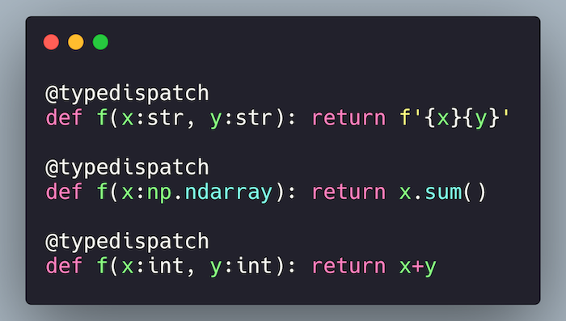

fastcore: An Underrated Python Library

Background
I recently embarked on a journey to sharpen my python skills: I wanted to learn advanced patterns, idioms, and techniques. I started with reading books on advanced Python, however, the information didn't seem to stick without having somewhere to apply it. I also wanted the ability to ask questions from an expert while I was learning -- which is an arrangement that is hard to find! That's when it occurred to me: What if I could find an open source project that has fairly advanced python code and write documentation and tests? I made a bet that if I did this it would force me to learn everything very deeply, and the maintainers would be appreciative of my work and be willing to answer my questions.
And that's exactly what I did over the past month! I'm pleased to report that it has been the most efficient learning experience I've ever experienced. I've discovered that writing documentation forced me to deeply understand not just what the code does but also why the code works the way it does, and to explore edge cases while writing tests. Most importantly, I was able to ask questions when I was stuck, and maintainers were willing to devote extra time knowing that their mentorship was in service of making their code more accessible! It turns out the library I choose, fastcore is some of the most fascinating Python I have ever encountered as its purpose and goals are fairly unique.
For the uninitiated, fastcore is a library on top of which many fast.ai projects are built on. Most importantly, fastcore extends the python programming language and strives to eliminate boilerplate and add useful functionality for common tasks. In this blog post, I'm going to highlight some of my favorite tools that fastcore provides, rather than sharing what I learned about python. My goal is to pique your interest in this library, and hopefully motivate you to check out the documentation after you are done to learn more!
Why fastcore is interesting
- Get exposed to ideas from other languages without leaving python: I’ve always heard that it is beneficial to learn other languages in order to become a better programmer. From a pragmatic point of view, I’ve found it difficult to learn other languages because I could never use them at work. Fastcore extends python to include patterns found in languages as diverse as Julia, Ruby and Haskell. Now that I understand these tools I am motivated to learn other languages.
- You get a new set of pragmatic tools: fastcore includes utilities that will allow you to write more concise expressive code, and perhaps solve new problems.
- Learn more about the Python programming language: Because fastcore extends the python programming language, many advanced concepts are exposed during the process. For the motivated, this is a great way to see how many of the internals of python work.
A whirlwind tour through fastcore
Here are some things you can do with fastcore that immediately caught my attention.
Making **kwargs transparent
Whenever I see a function that has the argument **kwargs, I cringe a little. This is because it means the API is obfuscated and I have to read the source code to figure out what valid parameters might be. Consider the below example:
def baz(a, b=2, c=3, d=4): return a + b + c
def foo(c, a, **kwargs):
return c + baz(a, **kwargs)
inspect.signature(foo)
Without reading the source code, it might be hard for me to know that foo also accepts and additional parameters b and d. We can fix this with delegates:
def baz(a, b=2, c=3, d=4): return a + b + c
@delegates(baz) # this decorator will pass down keyword arguments from baz
def foo(c, a, **kwargs):
return c + baz(a, **kwargs)
inspect.signature(foo)
You can customize the behavior of this decorator. For example, you can have your cake and eat it too by passing down your arguments and also keeping **kwargs:
@delegates(baz, keep=True)
def foo(c, a, **kwargs):
return c + baz(a, **kwargs)
inspect.signature(foo)
You can also exclude arguments. For example, we exclude argument d from delegation:
def basefoo(a, b=2, c=3, d=4): pass
@delegates(basefoo, but=['d']) # exclude `d`
def foo(c, a, **kwargs): pass
inspect.signature(foo)
You can also delegate between classes:
class BaseFoo:
def __init__(self, e, c=2): pass
@delegates()# since no argument was passsed here we delegate to the superclass
class Foo(BaseFoo):
def __init__(self, a, b=1, **kwargs): super().__init__(**kwargs)
inspect.signature(Foo)
For more information, read the docs on delegates.
Avoid boilerplate when setting instance attributes
Have you ever wondered if it was possible to avoid the boilerplate involved with setting attributes in __init__?
class Test:
def __init__(self, a, b ,c):
self.a, self.b, self.c = a, b, c
Ouch! That was painful. Look at all the repeated variable names. Do I really have to repeat myself like this when defining a class? Not Anymore! Checkout store_attr:
class Test:
def __init__(self, a, b, c):
store_attr()
t = Test(5,4,3)
assert t.b == 4
You can also exclude certain attributes:
class Test:
def __init__(self, a, b, c):
store_attr(but=['c'])
t = Test(5,4,3)
assert t.b == 4
assert not hasattr(t, 'c')
There are many more ways of customizing and using store_attr than I highlighted here. Check out the docs for more detail.
P.S. you might be thinking that Python dataclasses also allow you to avoid this boilerplate. While true in some cases, store_attr is more flexible.{% fn 1 %}
{{ "For example, store_attr does not rely on inheritance, which means you won't get stuck using multiple inheritance when using this with your own classes. Also, unlike dataclasses, store_attr does not require python 3.7 or higher. Furthermore, you can use store_attr anytime in the object lifecycle, and in any location in your class to customize the behavior of how and when variables are stored." | fndetail: 1 }}
Avoiding subclassing boilerplate
One thing I hate about python is the __super__().__init__() boilerplate associated with subclassing. For example:
class ParentClass:
def __init__(self): self.some_attr = 'hello'
class ChildClass(ParentClass):
def __init__(self):
super().__init__()
cc = ChildClass()
assert cc.some_attr == 'hello' # only accessible b/c you used super
We can avoid this boilerplate by using the metaclass PrePostInitMeta. We define a new class called NewParent that is a wrapper around the ParentClass:
class NewParent(ParentClass, metaclass=PrePostInitMeta):
def __pre_init__(self, *args, **kwargs): super().__init__()
class ChildClass(NewParent):
def __init__(self):pass
sc = ChildClass()
assert sc.some_attr == 'hello'
Type Dispatch
Type dispatch, or Multiple dispatch, allows you to change the way a function behaves based upon the input types it receives. This is a prominent feature in some programming languages like Julia. For example, this is a conceptual example of how multiple dispatch works in Julia, returning different values depending on the input types of x and y:
collide_with(x::Asteroid, y::Asteroid) = ...
# deal with asteroid hitting asteroid
collide_with(x::Asteroid, y::Spaceship) = ...
# deal with asteroid hitting spaceship
collide_with(x::Spaceship, y::Asteroid) = ...
# deal with spaceship hitting asteroid
collide_with(x::Spaceship, y::Spaceship) = ...
# deal with spaceship hitting spaceship
Type dispatch can be especially useful in data science, where you might allow different input types (i.e. Numpy arrays and Pandas dataframes) to a function that processes data. Type dispatch allows you to have a common API for functions that do similar tasks.
Unfortunately, Python does not support this out-of-the box. Fortunately, there is the @typedispatch decorator to the rescue. This decorator relies upon type hints in order to route inputs the correct version of the function:
@typedispatch
def f(x:str, y:str): return f'{x}{y}'
@typedispatch
def f(x:np.ndarray): return x.sum()
@typedispatch
def f(x:int, y:int): return x+y
Below is a demonstration of type dispatch at work for the function f:
f('Hello ', 'World!')
f(2,3)
f(np.array([5,5,5,5]))
There are limitations of this feature, as well as other ways of using this functionality that you can read about here. In the process of learning about typed dispatch, I also found a python library called multipledispatch made by Mathhew Rocklin (the creator of Dask).
After using this feature, I am now motivated to learn languages like Julia to discover what other paradigms I might be missing.
A better version of functools.partial
functools.partial is a great utility that creates functions from other functions that lets you set default values. Lets take this function for example that filters a list to only contain values >= val:
test_input = [1,2,3,4,5,6]
def f(arr, val):
"Filter a list to remove any values that are less than val."
return [x for x in arr if x >= val]
f(test_input, 3)
You can create a new function out of this function using partial that sets the default value to 5:
filter5 = partial(f, val=5)
filter5(test_input)
One problem with partial is that it removes the original docstring and replaces it with a generic docstring:
filter5.__doc__
fastcore.utils.partialler fixes this, and makes sure the docstring is retained such that the new API is transparent:
filter5 = partialler(f, val=5)
filter5.__doc__
Composition of functions
A technique that is pervasive in functional programming languages is function composition, whereby you chain a bunch of functions together to achieve some kind of result. This is especially useful when applying various data transformations. Consider a toy example where I have three functions: (1) Removes elements of a list less than 5 (from the prior section) (2) adds 2 to each number (3) sums all the numbers:
def add(arr, val): return [x + val for x in arr]
def arrsum(arr): return sum(arr)
# See the previous section on partialler
add2 = partialler(add, val=2)
transform = compose(filter5, add2, arrsum)
transform([1,2,3,4,5,6])
But why is this useful? You might me thinking, I can accomplish the same thing with:
arrsum(add2(filter5([1,2,3,4,5,6])))
You are not wrong! However, composition gives you a convenient interface in case you want to do something like the following:
def fit(x, transforms:list):
"fit a model after performing transformations"
x = compose(*transforms)(x)
y = [np.mean(x)] * len(x) # its a dumb model. Don't judge me
return y
# filters out elements < 5, adds 2, then predicts the mean
fit(x=[1,2,3,4,5,6], transforms=[filter5, add2])
For more information about compose, read the docs.
A more useful repr
In python, __repr__ helps you get information about an object for logging and debugging. Below is what you get by default when you define a new class. (Note: we are using store_attr, which was discussed earlier).
class Test:
def __init__(self, a, b=2, c=3): store_attr() # `store_attr` was discussed previously
Test(1)
We can use basic_repr to quickly give us a more sensible default:
class Test:
def __init__(self, a, b=2, c=3): store_attr()
__repr__ = basic_repr('a,b,c')
Test(2)
Monkey Patching With A Decorator
It can be convenient to monkey patch with a decorator, which is especially helpful when you want to patch an external library you are importing. We can use the decorator @patch from fastcore.foundation along with type hints like so:
class MyClass(int): pass
@patch
def func(self:MyClass, a): return self+a
mc = MyClass(3)
Now, MyClass has an additional method named func:
mc.func(10)
Still not convinced? I'll show you another example of this kind of patching in the next section.
A better pathlib.Path
When you see these extensions to pathlib.path you won't ever use vanilla pathlib again! A number of additional methods have been added to pathlib, such as:
Path.readlines: same aswith open('somefile', 'r') as f: f.readlines()Path.read: same aswith open('somefile', 'r') as f: f.read()Path.save: saves file as picklePath.load: loads pickle filePath.ls: shows the contents of the path as a list.- etc.
Read more about this here. Here is a demonstration of ls:
from fastcore.utils import *
from pathlib import Path
p = Path('.')
p.ls() # you don't get this with vanilla Pathlib.Path!!
Wait! What's going on here? We just imported pathlib.Path - why are we getting this new functionality? Thats because we imported the fastcore.utils module, which patches this module via the @patch decorator discussed earlier. Just to drive the point home on why the @patch decorator is useful, I'll go ahead and add another method to Path right now:
@patch
def fun(self:Path): return "This is fun!"
p.fun()
That is magical, right? I know! That's why I'm writing about it!
An Even More Concise Way To Create Lambdas
Self, with an uppercase S, is an even more concise way to create lambdas that are calling methods on an object. For example, let's create a lambda for taking the sum of a Numpy array:
arr=np.array([5,4,3,2,1])
f = lambda a: a.sum()
assert f(arr) == 15
You can use Self in the same way:
f = Self.sum()
assert f(arr) == 15
Let's create a lambda that does a groupby and max of a Pandas dataframe:
import pandas as pd
df=pd.DataFrame({'Some Column': ['a', 'a', 'b', 'b', ],
'Another Column': [5, 7, 50, 70]})
f = Self.groupby('Some Column').mean()
f(df)
Read more about Self in the docs.
Notebook Functions
These are simple but handy, and allow you to know whether or not code is executing in a Jupyter Notebook, Colab, or an Ipython Shell:
from fastcore.imports import in_notebook, in_colab, in_ipython
in_notebook(), in_colab(), in_ipython()
This is useful if you are displaying certain types of visualizations, progress bars or animations in your code that you may want to modify or toggle depending on the environment.
A Drop-In Replacement For List
You might be pretty happy with Python's list. This is one of those situations that you don't know you needed a better list until someone showed one to you. Enter L, a list like object with many extra goodies.
The best way I can describe L is to pretend that list and numpy had a pretty baby:
define a list (check out the nice __repr__ that shows the length of the list!)
L(1,2,3)
Shuffle a list:
p = L.range(20).shuffle()
p
Index into a list:
p[2,4,6]
L has sensible defaults, for example appending an element to a list:
1 + L(2,3,4)
There is much more L has to offer. Read the docs to learn more.
But Wait ... There's More!
There are more things I would like to show you about fastcore, but there is no way they would reasonably fit into a blog post. Here is a list of some of my favorite things that I didn't demo in this blog post:
Utilities
The Basics section contain many shortcuts to perform common tasks or provide an additional interface to what standard python provides.
- mk_class: quickly add a bunch of attributes to a class
- wrap_class: add new methods to a class with a simple decorator
- groupby: similar to Scala's groupby
- merge: merge dicts
- fasttuple: a tuple on steroids
- Infinite Lists: useful for padding and testing
- chunked: for batching and organizing stuff
Multiprocessing
The Multiprocessing section extends python's multiprocessing library by offering features like:
- progress bars
- ability to pause to mitigate race conditions with external services
- processing things in batches on each worker, ex: if you have a vectorized operation to perform in chunks
Functional Programming
The functional programming section is my favorite part of this library.
- maps: a map that also composes functions
- mapped: A more robust
map - using_attr: compose a function that operates on an attribute
Transforms
Transforms is a collection of utilities for creating data transformations and associated pipelines. These transformation utilities build upon many of the building blocks discussed in this blog post.
Further Reading
It should be noted that you should read the main page of the docs first, followed by the section on tests to fully understand the documentation.
- The fastcore documentation site.
- The fastcore GitHub repo.
- Blog post on delegation.
Shameless plug: fastpages
This blog post was written entirely in a Jupyter Notebook, which GitHub automatically converted into to a blog post! Sound interesting? Check out fastpages.